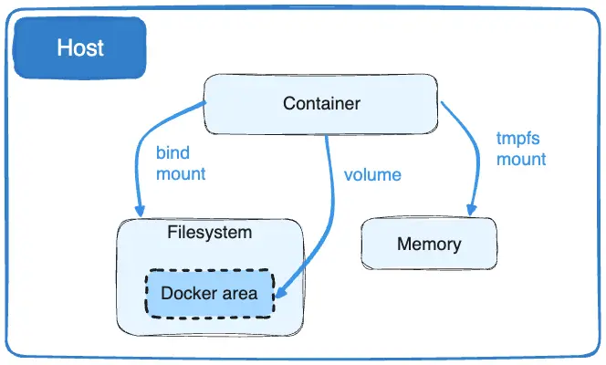

Docker compose 사용법 기본
실제 서비스를 제공하기 위해서는 프론트 엔트 코드, 백엔드 코드, 데이터베이스가 필요합니다.
그런데 도커는 결과적으로 하나의 컨테이너는 하나의 프로그램을 실행시키는 거에 초점이 맞춰져 있습니다.
도커 이미지는 애플리케이션 하나를 실행시키기 위해서 쓰여지는거라고 보면 됩니다.
그러면 여러 개의 도커를 한번에 만들고 한번에 실행할 수 있는 기능이 필요합니다. 그런 여러 개의 컨테이너를 관리하는 툴이 나오게 되는데 그 중 하나가 도커 컴포즈입니다.
정의
Docker Compose 공식문서
Docker Compose 명령어 공식문서
Docker V1 과 V2 차이점
Docker Compose는 멀티 컨테이너 애플리케이션을 정의하고 실행하는 도구입니다. 이는 간소화된 개발 및 배포 경험을 제공하는 열쇠 역할을 합니다.
Compose는 전체 애플리케이션 스택의 제어를 단순화하여 서비스, 네트워크 및 볼륨을 하나의 이해하기 쉬운 YAML 구성 파일로 관리할 수 있게 해줍니다. 그런 다음 단일 명령으로 구성 파일에서 모든 서비스를 생성하고 시작할 수 있습니다.
Compose는 생산, 스테이징, 개발, 테스트 및 CI 워크플로우와 같은 모든 환경에서 작동합니다. 또한 애플리케이션의 전체 라이프사이클을 관리하기 위한 다양한 명령도 제공합니다:
서비스 시작, 중지 및 다시 빌드
실행 중인 서비스 상태 확인
실행 중인 서비스의 로그 출력 스트리밍
서비스에서 일회성 명령 실행
작성 기본
Docker Compose는 docker-compose.yml 파일을 작성하여, 실행할 수 있음
docker-compose.yml은
YAML형식으로 작성함
YAML 문법
IT에서는 데이터를 구조화하는 다양한 문법이 있습니다.
대표적인 데이터 구조화 문법은 JSON,XML,CSV 등이 있음
직관적이지 않지만, 간결한 장점이 있다.
YAML 기본 문법과 json 비교
줄바꿈
|에 -를 추가하면 맨 마지막행 줄바꿈은 제외합니다. |만 있을 경우에는 고라니\n민족\n입니다.\n이 됩니다.
>를 사용하면 중간에 있는 개행은 사라집니다. -를 추가로 붙이면 "name": "고라니 민족 입니다."로 마지막 개행이 제외됩니다.
사용법
version
Docker Compose 파일 포멧 버전 지정
docker 버전에 따라 지원하는 Docker Compose 버전이 있으며, 기본적으로 버전 2으로 사용하는 것이 일반적임
버전 별로 호환이 되는 명령어가 있고, 최신 버전은 주의해서 사용하는 것이 좋음 예제 스크립트 1
services
도커 컨테이너를 여러개 다루기 때문에 사용하는 옵션
image
도커 파일을 기반으로 사용할 수 있고, Dockerhub에 있는 이름도 사용가능함
restart
컨테이너가 다운로드될 경우, 항상 재시작하는 명령어
언제든지 다운될때가 있음, 왠만한 케이스에는 계속 동작할 수 있다
valums
docker run 옵션중 -v 옵션과 동일한 역할
여러 volume을 지정할 수 있기 때문에 리스트로 작성
만약 현재 pwd에서 mysqldata가 없을 경우 새로 폴더를 만듭니다. ls로 조회를 하면 MySQL 컨테이너가 실행되면서 데이터베이스에 관련된 데이터들을 이 폴더에 구성되고 여기에 데이터가 복사가 되는 것을 확인할 수 있습니다.
만약 이미 해당 정가 저장된 폴더가 있다면 새로 만들지 않고 기존 정보를 가져와서 사용합니다.
enviroment
Dockerfile의 ENV옵션과 동일한 역할
다음 env_file 옵션으로 환경변수 값이 들어있는 파일을 읽어드릴 수 있습니다.
패스워드등 보안이 필요한 부분을 docker compose보다는 별도 파일로 작성하여,
env_file옵션으로 적용하는 경우가 많음
services: db: image: mysql:8.0.36 restart: always volumns: - ./mysqldata:/var/lib/mysql env_file: - ./mysql.envenv_file 파일 포멧
$ cat mysql.env MYSQL_ROOT_PASSWORD=1234 MYSLQ_DATABASE=library
ports
docker run의 -p 옵션과 동일한 역할
YAML 문법에 11:22(숫자로 작성한 경우) 와 같이 작성하면, 시간으로 해석하기 때문에,
" "를 붙여야함
Docker Compose 실행/중지하기
실행
중지
도커 삭제
테스트는 up/down을 통해서 진행합니다.
컨테이너 추가하기
도커 컴포즈로 -links를 사용하여 통신할 수 있습니다.
해당 작업에서 build에 필요한 Dockerfile 위치는 app.b uild.context 값에 있는 폴더를 찾습니다.
그리고 찾는 파일은 Dockerfile이라고 지정한 내용입니다.
현재 위치는 pwd = /home/yousd179/02_FLASK_MYSQL에 필요한건 docker-compose.yml이 있습니다. 여기서 작성된 컨테이너들 중에서 app 처럼 Dockerfile이 필요한 경우는 ./01_FLASK_DOCKER 처럼 하위 폴더를 만들어서 컨테이너 별로 필요한 Dockerfile를 넣어서 관리합니다
links 명령어의 값인 db:mysqldb에서 db는 도커-컴포즈내 컨테이너 이름 db:의 이름이 되고 내부 도커 컨테이너를 접속할때 app컨테이너는 데이터 베이스에 접속할때 mysqldb 이름을 사용하여 접속할 수 있습니다.
이렇게 links에 값이 하나일 경우에는 db로 모두 접속할 수 있습니다.
컨테이너 명시적 작성
container_name
컨테이너 이름 설정
실행 순서 정하기
db 컨테이너 먼저 생성이 되서 실행이 되는건 강제할 수 있으나, 이미지에 있는 실행되는 과정까지 시간이 걸릴 수 있습니다.
접속이 안될 수 있기 때문에 인식을 하고 있어야합니다.
도커 컴포즈로 컨테이너 접속하기
Dockerignore
git의
.gitignore처럼 도커 파일 작성시COPY로 특정 디렉토리에 있는 파일을 복사할 때, 불필요한 파일은 무시할 수 있도록 하는 파일
*/flask*
현재 폴더의 어떤 하위 폴더든 (*/ 가 의미하는 뜻) flask로 시작하는 폴더나 파일명은 제외any/flask/.gradle, any/flaskkkkk , any/flaskit.exe
*/*/flask*
현재 폴더의 하위 폴더의 하위 폴더에서, flask로 시작하는 폴더나 파일명은 제외예: any/any/flask/kkk.txt , any/any/flask.txt
하위 폴더의 깊이에 상관없이 사용하려면
**/flask*와 같이 두개로 작성
flask?,flask*?는 한글자,*는 한글자 이상을 말합니다.정리하면
flask*는 flask로 시작하는 모든 폴더나 파일을 의미함
Docker Volume

도커 컨테이너에서 데이터를 영구적으로 저장하고 사용하는 기본 메커니즘은 볼륨(Volume) 입니다.
반면에 바인드 마운트(Bind Mount)는 호스트 머신의 디렉토리 구조와 운영체제 OS에 의존합니다.
볼륨은 도커가 완전히 관리하는 반면, 바인드 마운트는 호스트와 직접 연결합니다.
볼륨의 이점
백업 및 이동이 쉽습니다.
도커 CLI 명령이나 도커 API를 사용하여 볼륨을 관리할 수 있습니다.
볼륨은 Linux 및 window 컨테이너 모두에서 작동합니다.
여러 컨테이너 간 안전하게 공유할 수 있습니다.
볼륨 드라이버를 통한 기능확장이 가능합니다.
볼륨 드라이버를 사용하여 원격 호스트나 클라우드 공급자에 볼륨을 저장하거나 볼륨 내용을 암호화하거나 다른 기능을 추가 할 수 있습니다.
볼륨은 호스트 파일 시스템이 아닌 도커 엔진 내부에서 관리되므로 호스트와 독립적입니다.
볼륨을 삭제하거나 관리할 때도 도커 명령어를 사용합니다.
간단 정리
도커 엔진 내부에서 볼륨이라는 별도의 영역을 만들기 때문에 호스트 PC에 독립적이며, 다양한 플러그인을 활용할 수 있다.